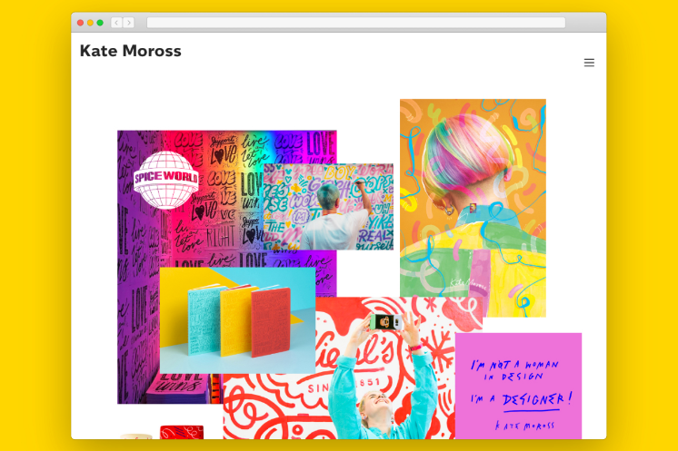

35 Best Graphic Design Portfolio Examples + Tips To Build Your Own

Putting together a kick-ass graphic design portfolio isn’t just something you need to
worry about when you’re a student. You need to think about maintaining,
improving and evolving your portfolio throughout your graphic design career.
We all know a winning portfolio is vital when you’re going for a new job.
But that’s not all. You might be called in at a moment’s notice to chat with your
art director to discuss a promotion opportunity or a hot new project you didn’t even know about.
And you don’t want to be caught short by a graphic design portfolio that’s not all it could be.
List of graphic design portfolio examples
- Kate Moross

- Lotta Nieminen

- Maria Vazquez